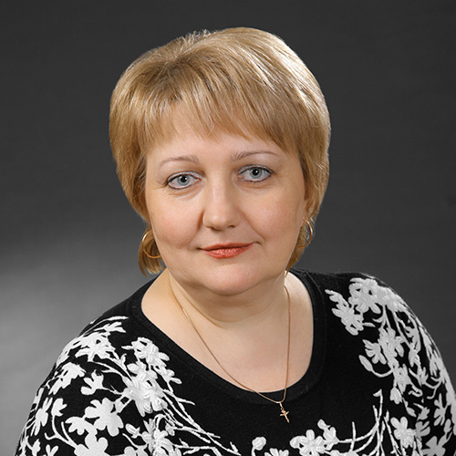
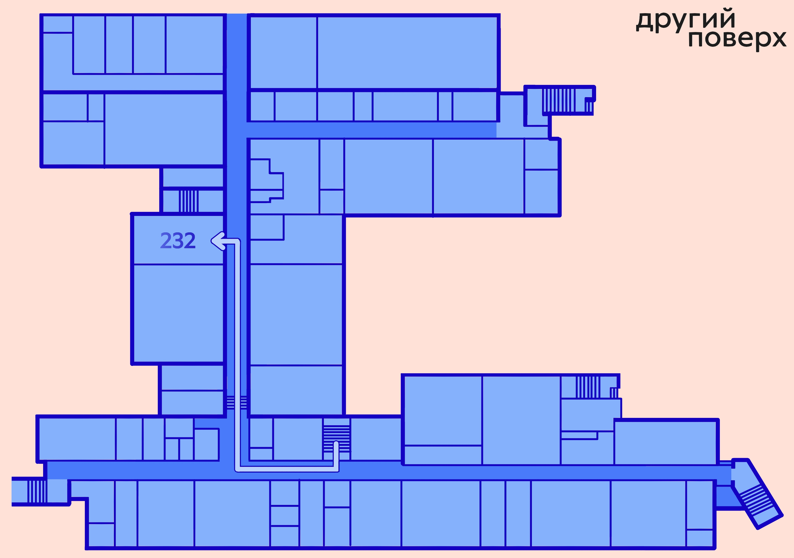

Як дістатися локації?
Скористайтеся картою, щоб знайти найкращий шлях до аудиторії, в якій буде проходити захід без зайвих труднощів!

Кому це буде цікаво?
Коротко про те, для кого ця локація буде найцікавішою та чим вона може бути корисною.
Абітурієнтам (Бакалаврат та магістратура)
Випускники 9-11 класів та коледжу
Батькам
Знайомтесь із нашими спікерами
Експерти, викладачі та практики, які поділяться досвідом, розкажуть про навчання, кар’єрні можливості та особливості освітніх програм.
Освітні програми
Ознайомтеся з освітніми програмами та знайдіть напрям, який найбільше відповідає вашим інтересам, цілям і майбутній професії.
Освіта в світлинах